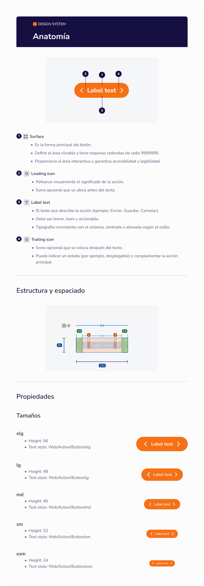

Overview
During my 6-month internship, I worked within the design team to strengthen the foundations of their digital product. My role was focused on the structural and documentation phase, ensuring that core components and patterns were not only visually correct but also scalable and well-organized.
The Context
In a large-scale financial environment, consistency is everything. I contributed by refining the Information Architecture and establishing clear documentation for foundations that would serve as the "source of truth" for designers and developers.
Scroll to explore architecture →
